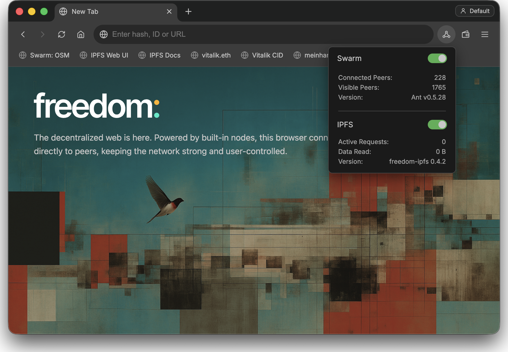

Writing the Decentralized Web
DappCon · Infrastructure Layer
Writing the dweb.
Not just reading it.
Using wallet and storage APIs in Freedom Browser — publishing, signing, and resolving content on peer-to-peer storage networks.
Meinhard Benn · meinhard.eth
Before we start
Get set up now
- Clone — github.com/solardev-xyz/freedom-browser
- Set up & run:
npm install
npm run ant:download
npm run ipfs:download
npm start - Wait for the Swarm node to connect to 20+ nodes
- Open freedombrowser.eth
- Create an identity
- Clone the workshop repo — github.com/meinharrd/dappcon-2026
What ready looks like
Swarm & IPFS connected

Objective
You will have published to the dweb
→ create content
→ publish to Swarm window.swarm
→ receive bzz:// reference
→ sign metadata personal_sign
→ resolve & open via bzz:// · ENS
Architecture
The browser is the bridge
↓
Freedom Browser APIs
↓ window.ethereum — identity · signing · permissions
↓ window.swarm — publish · feeds · chunks
↓ bzz:// · ipfs:// · ens:// — open by hash / CID / name
Swarm node → bzz:// reference → addressing
API model
Familiar on purpose
// what every dapp dev already knows
await window.ethereum.request({ method: "eth_requestAccounts" });
// the same mental model, for storage
await window.swarm.requestAccess();
const { reference, bzzUrl } = await window.swarm.publishData({
data: "<h1>Hello dweb</h1>",
contentType: "text/html"
});
// → { reference: "a1b2…", bzzUrl: "bzz://a1b2…" }One thing before we upload
Publishing runs through your node
- Swarm publishing goes through your own Swarm node — set up at freedom://publish
- A postage batch (paid in xBZZ) stamps what you upload — buy / extend it in the Stamp manager
- Today: I send you xBZZ (and xDAI for gas if needed) to buy your own stamp — or I publish live and share the hash. Reading and signing need none of this.
- In production: your app or your user funds the batch
Hands-on 1
Publish to Swarm
await window.swarm.requestAccess(); // approve the prompt
const { reference, bzzUrl } = await window.swarm.publishData({
data: "<h1>Hello dweb</h1>",
contentType: "text/html", name: "hello.html" });
console.log(bzzUrl); // → your first bzz:// referenceThen open the bzz:// URL. No funded node? Open the shared hash on screen, or view any reference through a public Swarm gateway — e.g. vibing.at/ant.
Paste into the DevTools console · examples/hands-on-1-publish.js
Checkpoint
You just published — no server, no gateway
- bzz:// reference in the console
- bzz://… opens in Freedom Browser, served from peers
- Content-addressed: the reference is the identity of the data
Demo
Reading the rest of the dweb
Freedom also runs an IPFS (Kubo) node — open any ipfs:// CID or ipns:// name straight from the address bar.
IPFS CIDs · pinning · broad ecosystem — read
Today the publish API is Swarm-only; IPFS is the read side. Same browser, both networks.
Hands-on 2
Storage gives content.
Signing gives authorship.
const metadata = { title, reference, bzzUrl, timestamp };
const [account] = await window.ethereum.request({
method: "eth_requestAccounts" });
const signature = await window.ethereum.request({
method: "personal_sign",
params: [JSON.stringify(metadata), account] });Portable, provable metadata. The same wallet can act as a Swarm publisher identity, signing what you upload.
Paste into the DevTools console · examples/hands-on-2-sign.js
Demo
From hash to name
→ ENS contenthash (set once, mainnet tx)
→ resolved & verified locally (Colibri)
→ rendered by Freedom Browser
Setting the contenthash is a mainnet transaction — done ahead of time. Live, we resolve a pre-pointed name.
Mini app
Open. Run. Modify.
examples/mini-app/index.html // already cloned — complete & working, no build step- Publish a post: window.ethereum → window.swarm.publishData → personal_sign
- Approve the per-origin prompts the first time
- Then change one thing — add a field, restyle the render, or write a feed update
- Suggestions in the README
What this unlocks
Apps that write user-owned data
- Signed blog posts · portable profiles · dweb comments
- Static site publishing · mutable feeds (updateFeed) for content that changes
- Local-first apps that publish to peer-to-peer storage
- Monetize it with native x402 — pay-as-you-browse, no gateway or subscription
Not about replacing hosting — about giving applications a native way to write to peer-to-peer infrastructure.
Sneak preview · what's next
Next: one namespace — navigator.freedom
storage, // publish · files · chunks · upload status ✓ today
feeds, // create · update · read · single-owner chunks ✓ today
identity, // publisher keys · getSigningIdentity · sign ✓ today
names, // resolve + set ENS contenthash soon
ipfs, // native node — write, not just read soon
pay, // native x402, pay-as-you-browse soon
}
Today's window.ethereum + window.swarm fold into a single navigator.freedom surface — same mental model, more verbs.
Wrap-up
From linking to storage,
to writing to it
- Run Freedom Browser from source · try the mini app · publish your own page tonight
- Everything from today lives in github.com/meinharrd/dappcon-2026
- Feedback on the window.swarm & window.ethereum APIs is explicitly invited